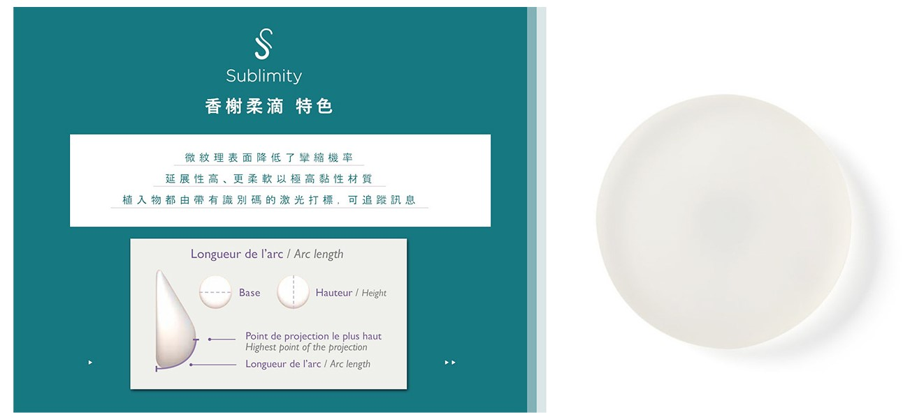
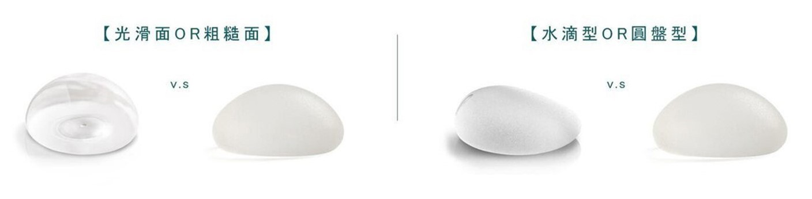
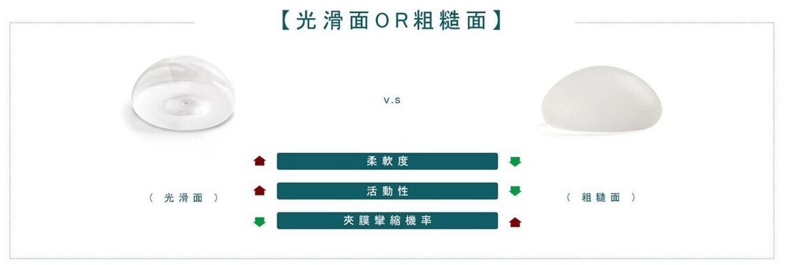

什麼是柔滴隆乳？
香榭柔滴隆乳是由法國Sebbin所研發出來的最新型義乳材質，填充物使用符合生物相容
性的醫學級材質，具有較硬稠度的高黏性凝膠，使其延展性高，觸感更為柔和堅定。
柔滴隆乳4大優點
優點1
大幅降低術後發生攣縮的機率
SEBBIN香榭柔滴(Sublimity)材質形狀是微紋理圓形，表面的粗糙度較低，屬於比較細緻的毛面，其細緻微小的紋理與精緻度，被國際IOS標準列為「光滑面」圓形，有效降低莢膜攣縮率。
優點2
手術傷口小
柔滴擁有絕佳的延展性與柔軟度，具有記憶性 即使遇到強力擠壓，依然能夠快速恢復原狀， 不僅在外觀上更像仿真胸形，在手術上能從較小的 切口或位置放入假體，而內部矽膠材質是選用高 稠度與黏性的矽膠，植入後不容易變形或是破裂 流出，大幅縮短恢復期，提高安全性。
優點3
觸感更加自然，宛如真奶
柔滴內裡流動型的凝膠柔軟延展性高，可以根據人的動作或地心引力而改變，使胸部形狀更加自然，隨著體態姿勢的不同而變化，彷彿真實的自然胸部，柔軟度也較魔滴柔軟。
優點4
價格親民
柔滴因無100%填充，所以隆乳手術費用較魔滴親民，也有十年安心保固。
柔滴隆乳的缺點 - 水波紋可能性較高
因柔滴內膠體採用的是較水狀的Cohesive I膠體，且無100%填充，故皮膚組織較薄的纖瘦女性，容易出現水波紋，因此再搭配「複合式隆乳手術」，加入自體脂肪，在果凍矽膠邊緣加入一些脂肪修飾，讓胸型更加自然好看，並柔化乳房邊緣的線條美感，增進觸感上的真實自然。
柔滴隆乳VS魔滴隆乳
| 柔滴(Sebbin) | 魔滴(Motiva) | 曼陀(Mentor) | |
|---|---|---|---|
| 外觀 | 圓盤型(較柔軟) | 圓盤型(較有彈性) | 圓盤型(較柔軟) |
| 外膜 | 奈米紋理面(較細緻) | 奈米絲綢絨毛(較粗糙) | 光滑面 |
| 疤痕 | 傷口2~3公分 | 傷口2~3公分 | 傷口2~3公分 |
| 膠體 | 水狀膠體/較軟 | 稠狀膠體/較硬 | 水狀膠體/較軟 |
| 價格 | 價格親民 | 價格昂貴 | 價格親民 |
| 攣縮率 | 低於1% | 低 | 高 |
| 按摩 | 不需要 | 不需要 | 需要 |
| 原產地 | 法國 | 美國 | 美國 |
香榭柔滴Sublimity
香榭柔滴Sublimity微紋理圓形乳腺植入物，是由法國SEBBIN所研發出來的最新型義乳材質，表面的粗糙度非常低，因此被國際ISO標準列為”光滑”， 填充物使用符合生物相容性的醫學級材質，具有較硬稠度的高黏性凝膠，使其延展性高，觸感更為柔和堅定。 微紋理圓形乳腺植體在數百名患者的臨床研究表現相當亮眼。有國際雜誌上的論文表示，此種新表面和極低的莢膜攣縮發生率有關聯。 此外，香榭柔滴經過了100%的植體測試，符合NF EN ISO 14630：2013和NF EN ISO 14607：2009標準的產品，符合歐洲的指令93/42。
香榭柔滴隆乳觸感是否自然？像真實的胸部嗎？
香樹柔滴Sublimity的微紋理圓形植體，除了為極高黏性材質且更柔軟之外，每個植體皆有帶有識別碼的激光打標，可以追踪植入物的信息。此編號位於植體隨附的標籤上，手術後將會被顯示在受手術者的病曆卡上。 臨床手術追蹤10年後，只有不到1%的受手術者表示假體有產生破裂以及莢膜攣縮的症狀。證實了香榭柔滴Sublimity發生夾膜攣縮的機率極低，特殊的微紋理材質確實降低了攣縮機率。
市面上該如何選擇適合的假體材質？
隨著醫美的進步，如今，形狀並不是決定安全性的唯一方面，如何製作介於「光滑與粗糙之間」平衡的紋理，更是重要的一環。
市面上有許多各廠商推出的義乳材質，從光滑面、水滴型、到現在的絨毛面，在材質和形狀上不斷的推層出新。光滑面和粗糙面在不同的時間流行，但兩款材質各有利弊：光滑面的植入物較為柔軟，活動性位移機率高，須經過按摩來降低夾膜攣縮的機率；粗糙面的植入物沒有光滑面柔軟，雖粗糙面容物附著在組織上降低了位移風險，但也提高了夾膜攣縮的機率。類紋理面已充分涵蓋兩者之間優點，促使上市後風靡理由。
香榭柔滴Sublimity 微紋理面 V.S 光滑面
香榭柔滴Sublimity假體的微紋理面，不僅讓粗糙面及光滑面兩者之間差異縮小，也大大降低了夾膜攣縮發生的機率。
台大整形醫師團隊


耐斯診所 三大堅持

提供最優質的醫療服務
提供最優質服務與
專業醫療顧問 客製打造療程

整形外科醫師 術前諮詢
整形外科專科醫師陣容 集結各領域專家
進行充分的溝通提供專業建議

專人術後追蹤管理
建立完整客戶術後服務SOP
精緻管理照顧，術後好安心
柔滴隆乳-常見問題 FAQ
-
柔滴隆乳需要按摩嗎？
不用按摩，香榭柔滴屬於微紋理圓形隆乳材質，微紋理型的表面，更貼近人體組織的相容性及安全性，接觸點小、不容易刺激到莢膜細胞，免去了術後按摩的疼痛感，也解省不少照顧的時間。
-
做完柔滴隆乳手術後多久可以運動？
手術後三個月可以進行低強度運動(EX:快走或瑜珈)，建議半年後再進行強度高的運動(EX:健身、有氧、重訊)。依照每個人的身體狀況不同，可於回診時與醫師進行討論。
-
做完柔滴隆乳手術後可以哺乳嗎？
隆乳會不會影響哺乳，須依據手術的切口位置而定。如果手術的切口在乳暈附近，可能會破壞到一些乳腺，影響部分乳汁的排出。一般會選擇乳暈隆乳的人，大多是合併修乳頭乳暈手術，對於否影響哺乳，建議和醫師討論是否採用其他部位的切口。
-
香榭柔滴Sublimity隆乳手術安全嗎？
所有的醫美手術都必須在合格的醫院診所進行，並配合專業合格的執刀醫師以及麻醉師，才能確保過程中的安全性。消費者也在術前蒐集各方面相關資料，避免發生糾紛與提高風險。
-
柔滴隆乳是什麼形狀？屬於光滑面還是粗糙面？
香榭柔滴是微紋理圓形，延展性高且具有較硬稠度的高黏性凝膠，使其更柔和堅定，半梨狀圓形更貼近人體自然胸型。
-
柔滴隆乳觸感自然嗎？像真實的胸部？
香榭柔滴觸感上比其假體更為柔軟，半梨形狀更貼近人體胸部的曲線，與人體的相容度也相當高，觸感上自然柔軟，就像真實的胸一樣。
-
柔滴手術後的傷口會很明顯嗎？
柔滴隆乳擁有極佳的高延展性及柔軟度，因此可在較小的切口放入假體，傷口可控制在三公分內，減少對皮膚組織的破壞，若選擇腋下做為柔滴隆乳切口，疤痕恢復後就像皺褶般自然，達到隱痕效果。
-
柔滴隆乳術後的飲食是否有限制？
柔滴隆乳手術後建議在飲食上避免刺激性食物，盡量以少油、少鹽的食物為主，幫助傷口盡快修復，達到美麗有自信的成效。